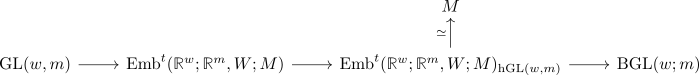

relative smooth tangent bundle
Definition
Let $M \hookrightarrow W$ be a smooth embedding of smooth manifolds. Then the relative smooth tangent bundle is defined as map
\begin{align*}
T(W;M): M \rightarrow \mathrm{BGL}(w;m)
\end{align*}
induced via

Note that $\mathrm{BGL}(w;m)$ is a CW-Complex
see: